Time in Milan and Europe - capturing light, texture, and the kind of detail that feeds how I approach UX and design. Each image is a moment I’d be glad to walk you through.
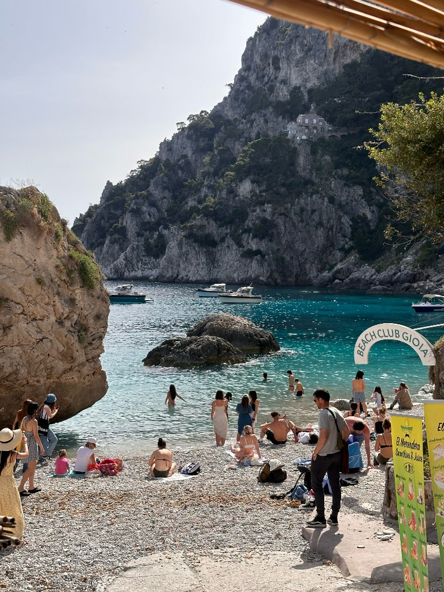
Rocky beach cove with turquoise water and swimmers.Ornate cathedral façade glowing in warm sunset light.
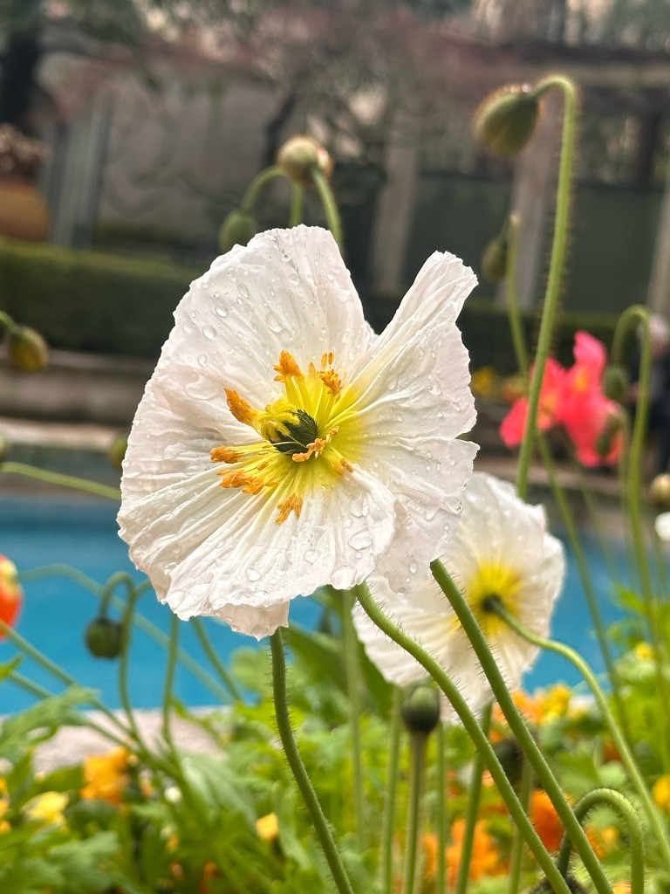
White flower in bloom with blurred garden background.
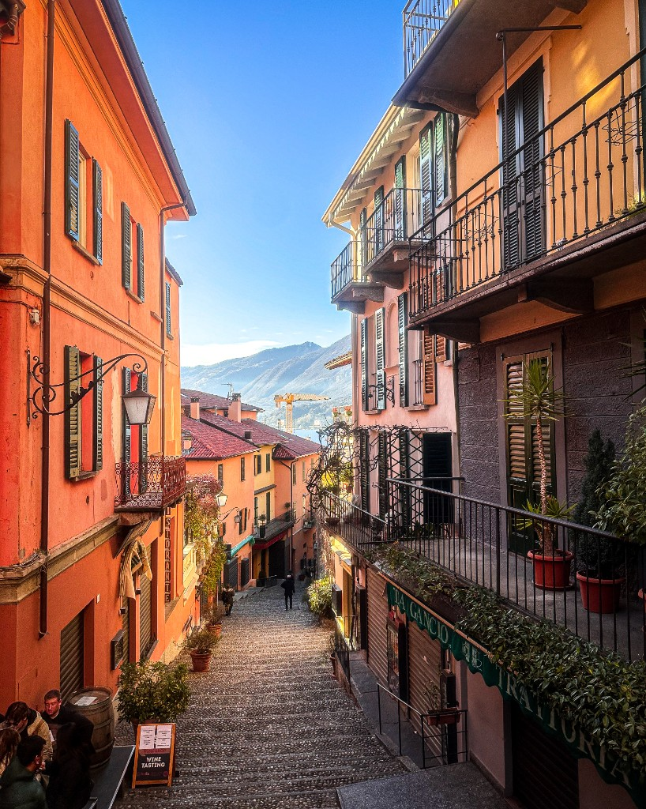
Narrow cobblestone street lined with colorful buildings.
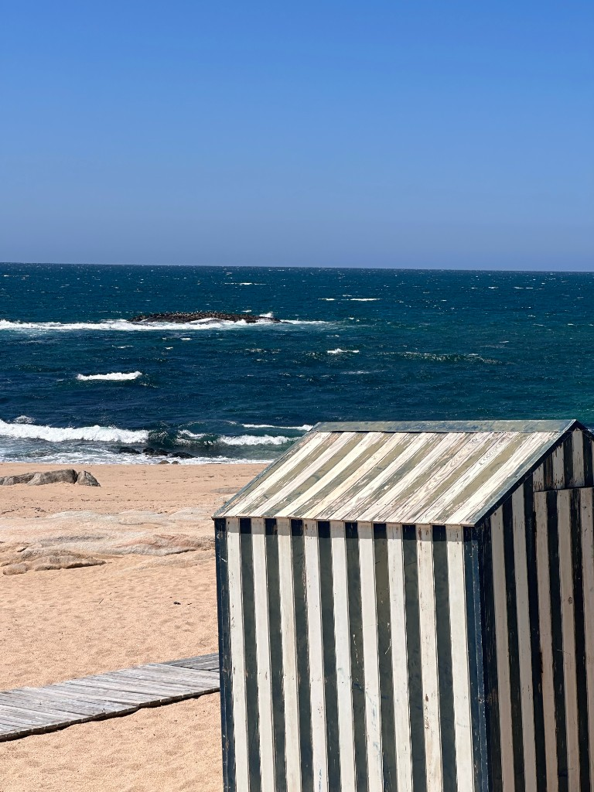
Striped beach hut beside a blue ocean.
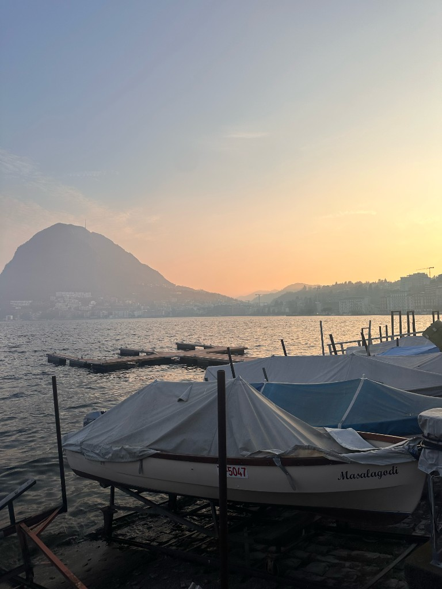
Small boat docked at sunset with mountains in the distance.
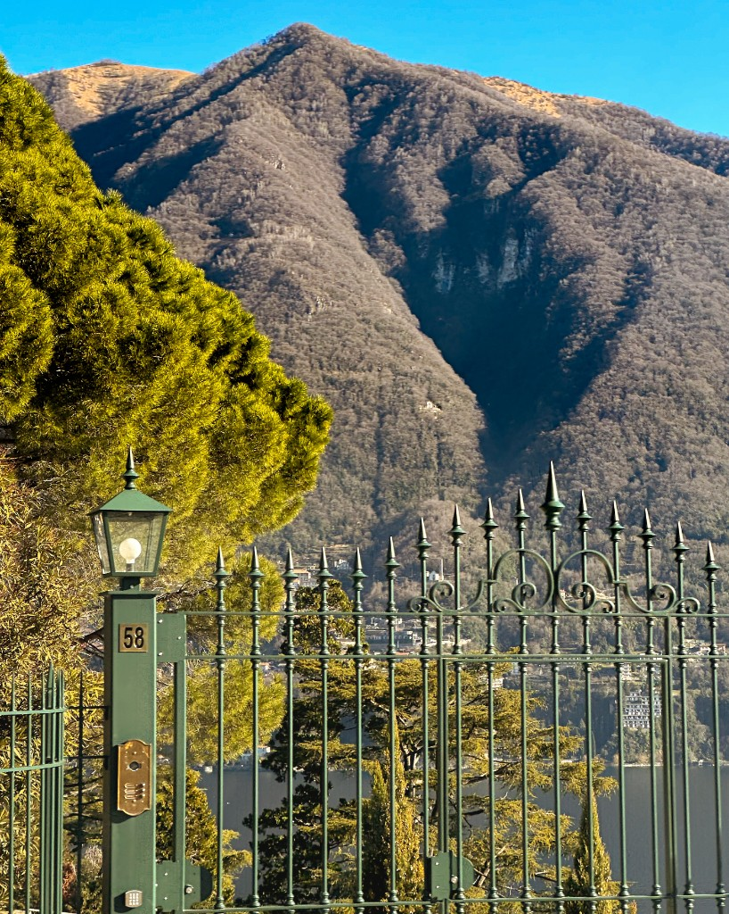
Mountain landscape viewed through a decorative fence.
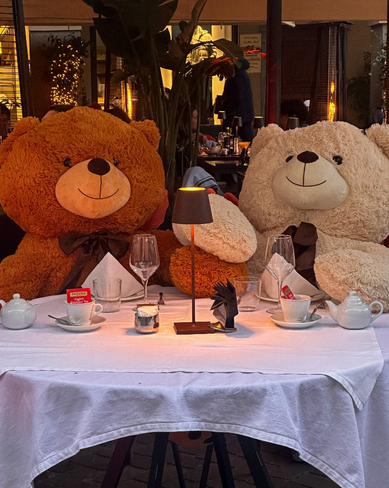
Two teddy bears seated at a candlelit restaurant table.
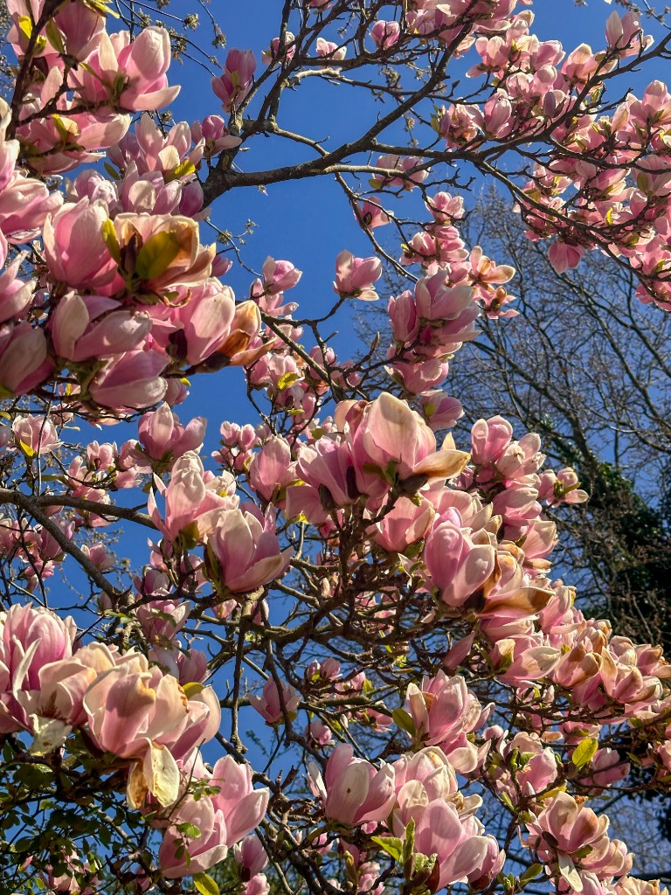
Pink blossoms against a clear blue sky.
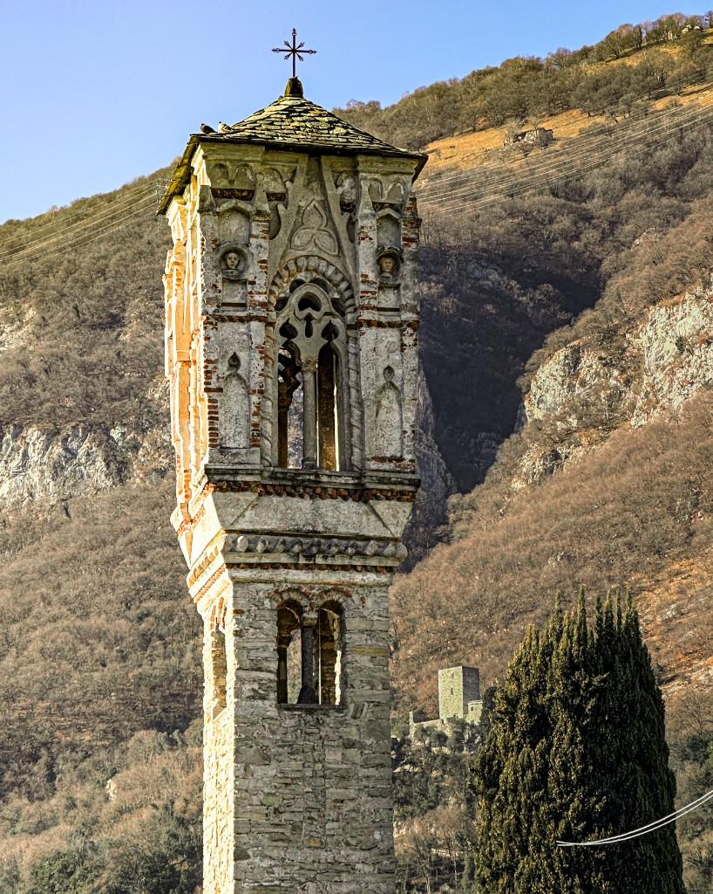
Stone bell tower set against a hillside.
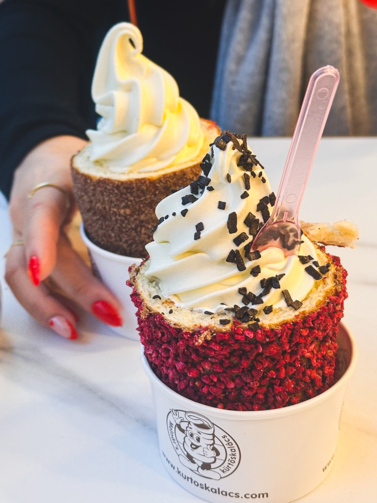
Two cups of soft-serve ice cream topped with chocolate and sprinkles.
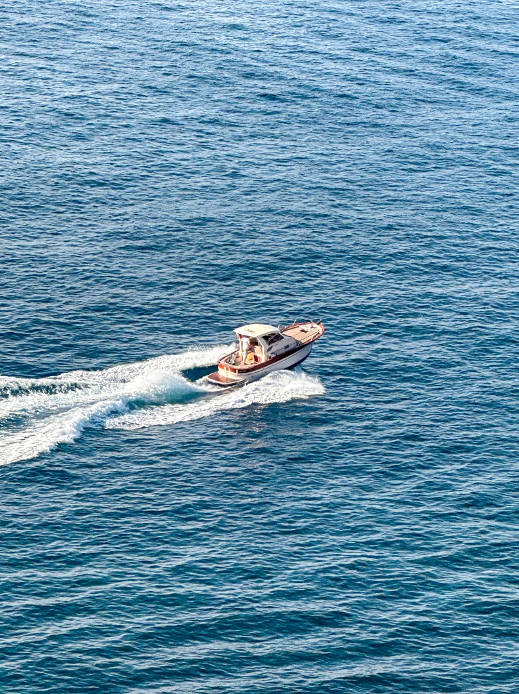
Small motorboat speeding across deep blue water.Ornate antique clock or decorative metal object in warm light.Colorful bouquet of tulips tightly arranged.
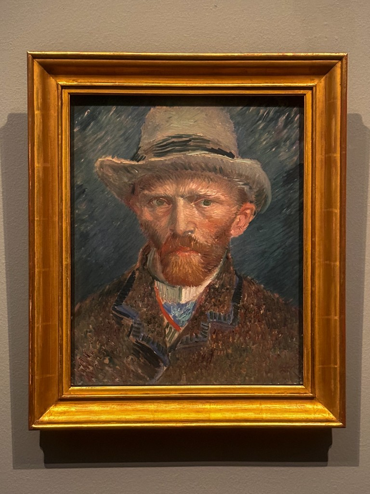
Framed portrait painting of a man wearing a hat.
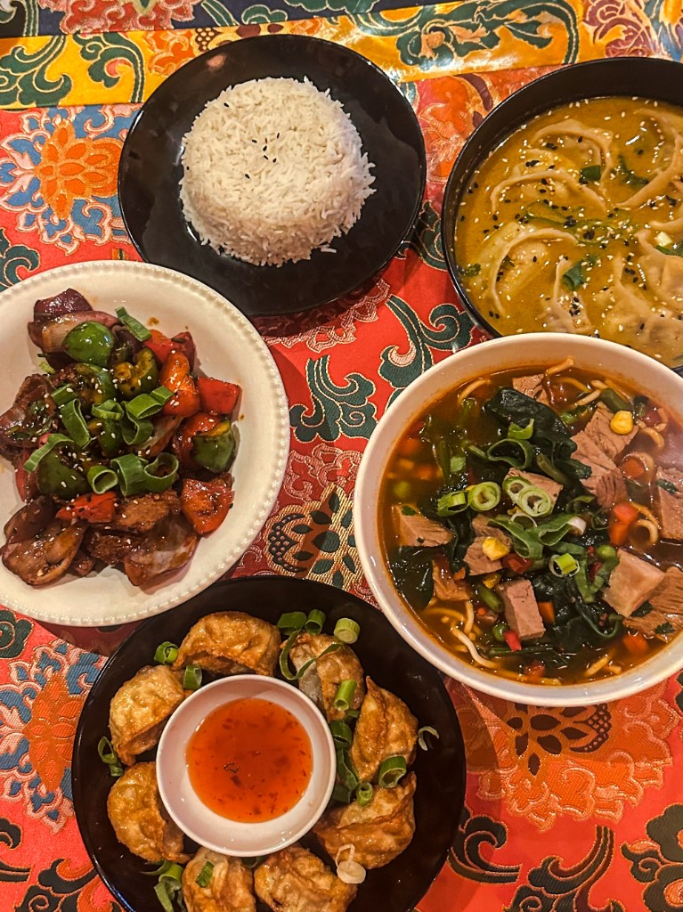
Table with assorted dishes including rice and vegetables.Large illuminated riverside building reflected in water at night.